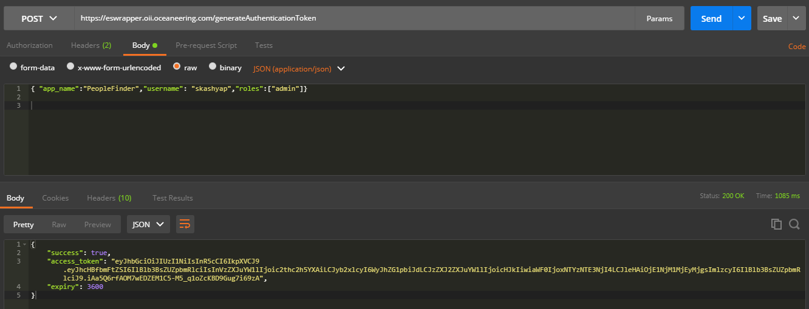
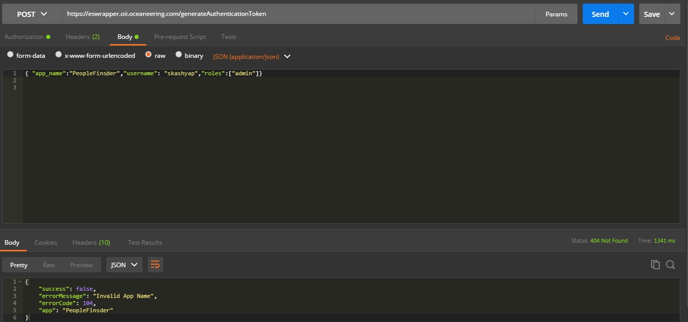
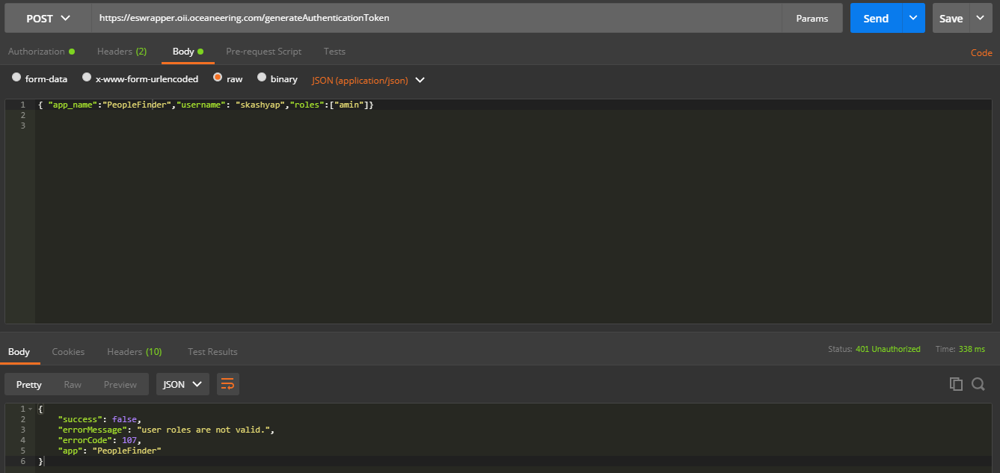

generatetoken works!
JSON Web Token (JWT) is a compact, URL-safe means of representing claims to be transferred between two parties. The claims in a JWT are encoded as a JSON object that is used as the payload of a JSON Web Signature (JWS) structure or as the plaintext of a JSON Web Encryption (JWE) structure, enabling the claims to be digitally signed or integrity protected with a Message Authentication Code (MAC) and/or encrypted.
To perform an empty search, followings steps needs to be done
Generate Token using REST client i;e POSTMAN. The endpoint to use for this would be
generateAuthenticationTokenToken once
generated has validity of 1 hour

Request Sample
Response Sample
All the error are handled which occured at the point of generating access_token. The error code will be in JSON format and is user understandable.

and perform search hitting the send. Make sure you're using the right endpoint i;e search

Sample 1 - When Application Name is Invalid
Response Sample
Sample 2 - When Roles are not available for particular case
Response Sample